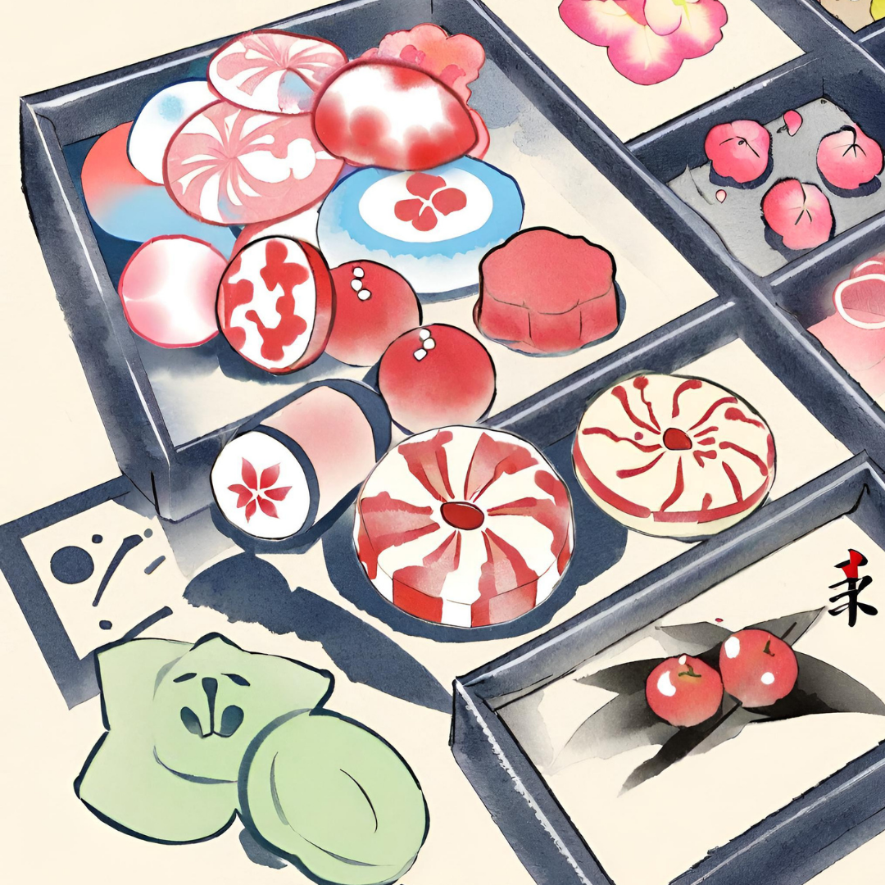

Sobre Nós
Um pouco sobre nossa história.
Sakura Izakaya é uma loja online que nasceu da paixão de Akihiro pela culinária japonesa. Nascido em Tóquio, Akihiro estava determinado a compartilhar os sabores autênticos do Japão com o mundo. Com uma seleção cuidadosamente escolhida de doces, bebidas e iguarias japonesas, Sakura Izakaya se tornou um refúgio virtual para os amantes da comida japonesa. Nossa missão é proporcionar uma experiência autêntica e de alta qualidade, conectando pessoas por meio da culinária japonesa. Junte-se a nós nesta jornada culinária e celebre a riqueza da cultura japonesa conosco.
